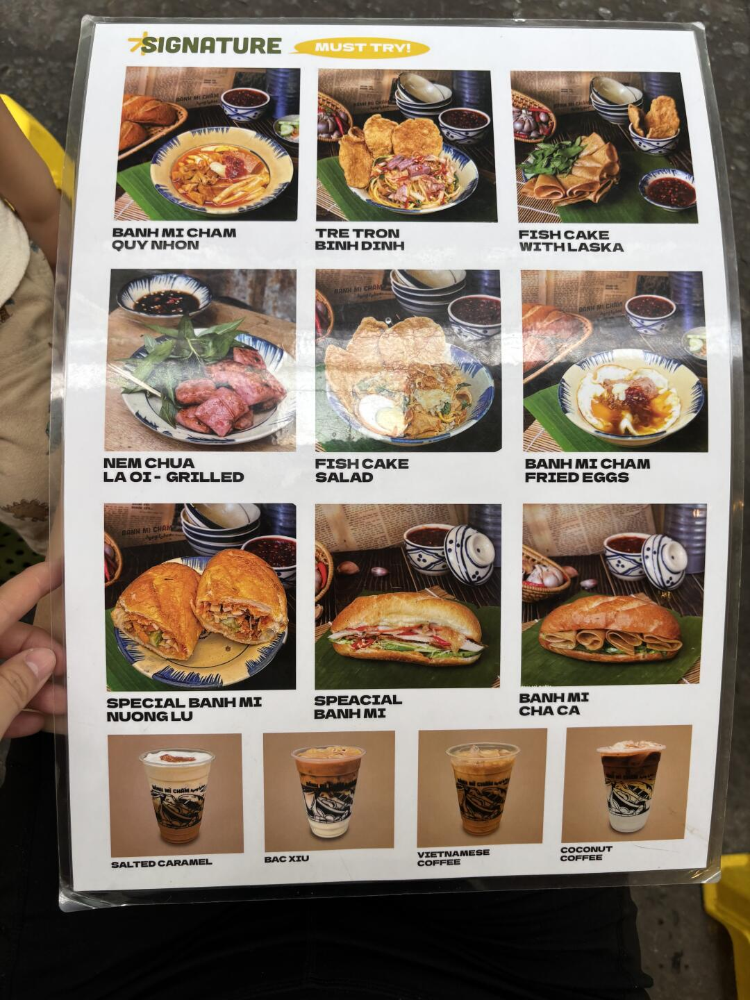

路邊攤 · 越南早午餐
Bánh Mì Chấm Hung Tubes
麵包蘸湯 · 315/18 Hai Bà Trưng（粉紅教堂旁邊）

💡 這家就在 Day 2 動線上：Quán Châu Ký（435 Hai Bà Trưng）吃完，沿同一條街走 5–10 分鐘就到（315/18）。
吃完再走 2 分鐘就是粉紅教堂（289 Hai Bà Trưng）。三個點同一條街，不用叫車。
🍜 Bánh Mì Chấm 是什麼
- 越南版的「麵包蘸湯」：金黃酥脆的法國麵包，蘸一碗醬油色肉湯吃
- 湯裡有大塊豬肉、鴨血、蔬菜，配涼拌黃瓜絲解膩
- 上桌方式很接地氣：黃色塑膠圓凳＋藤編托盤
- 貼主連續吃兩天；客群是本地年輕人和帶小孩的家庭，不是網紅店
📋 菜單亮點（SIGNATURE）
📸 實拍

ℹ️ 這是路邊攤，座位是矮塑膠凳、沒有冷氣。早上 6:30 就開，當早餐或早午餐都合適。價格與菜單以現場為準。